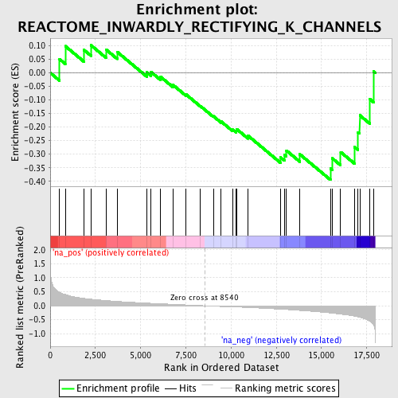
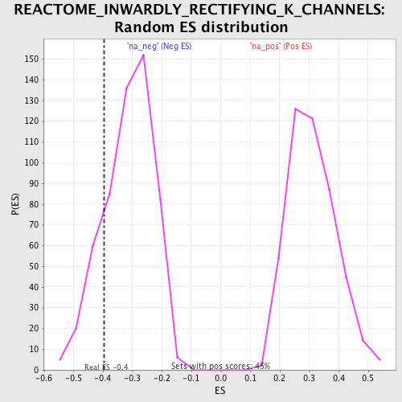

| | | Dataset | GSEA_Cushing_prerank_FC |
| Phenotype | NoPhenotypeAvailable |
| Upregulated in class | na_neg |
| GeneSet | REACTOME_INWARDLY_RECTIFYING_K_CHANNELS |
| Enrichment Score (ES) | -0.39471605 |
| Normalized Enrichment Score (NES) | -1.2601947 |
| Nominal p-value | 0.18315019 |
| FDR q-value | 0.5012099 |
| FWER p-Value | 1.0 |
Table: GSEA Results Summary

Fig 1: Enrichment plot: REACTOME_INWARDLY_RECTIFYING_K_CHANNELS
Profile of the Running ES Score & Positions of GeneSet Members on the Rank Ordered List
| PROBE | GENE SYMBOL | GENE_TITLE | RANK IN GENE LIST | RANK METRIC SCORE | RUNNING ES | CORE ENRICHMENT | | 1 | KCNJ1 | | | 514 | 0.484 | 0.0505 | No |
| 2 | GNG2 | | | 834 | 0.402 | 0.0986 | No |
| 3 | GABBR2 | | | 1857 | 0.265 | 0.0850 | No |
| 4 | GNG12 | | | 2251 | 0.237 | 0.1018 | No |
| 5 | KCNJ3 | | | 3100 | 0.187 | 0.0851 | No |
| 6 | GNG10 | | | 3705 | 0.157 | 0.0771 | No |
| 7 | KCNJ15 | | | 5337 | 0.095 | 0.0019 | No |
| 8 | KCNJ5 | | | 5579 | 0.087 | 0.0027 | No |
| 9 | GNB1 | | | 6106 | 0.071 | -0.0149 | No |
| 10 | ABCC8 | | | 6791 | 0.051 | -0.0447 | No |
| 11 | GNG5 | | | 7510 | 0.031 | -0.0797 | No |
| 12 | ABCC9 | | | 8290 | 0.008 | -0.1218 | No |
| 13 | KCNJ11 | | | 9017 | -0.015 | -0.1597 | No |
| 14 | GNG8 | | | 9455 | -0.026 | -0.1798 | No |
| 15 | GNB2 | | | 10095 | -0.036 | -0.2095 | No |
| 16 | KCNJ10 | | | 10281 | -0.042 | -0.2129 | No |
| 17 | KCNJ9 | | | 10313 | -0.043 | -0.2076 | No |
| 18 | KCNJ2 | | | 10936 | -0.064 | -0.2317 | No |
| 19 | GNGT2 | | | 12734 | -0.121 | -0.3120 | No |
| 20 | KCNJ12 | | | 12953 | -0.131 | -0.3027 | No |
| 21 | GNB3 | | | 13061 | -0.135 | -0.2866 | No |
| 22 | KCNJ6 | | | 13801 | -0.167 | -0.3005 | No |
| 23 | GNGT1 | | | 15493 | -0.257 | -0.3527 | Yes |
| 24 | GNG3 | | | 15595 | -0.263 | -0.3152 | Yes |
| 25 | KCNJ14 | | | 16058 | -0.299 | -0.2921 | Yes |
| 26 | GABBR1 | | | 16829 | -0.373 | -0.2739 | Yes |
| 27 | KCNJ8 | | | 17017 | -0.399 | -0.2191 | Yes |
| 28 | GNG7 | | | 17115 | -0.415 | -0.1566 | Yes |
| 29 | GNG4 | | | 17679 | -0.554 | -0.0973 | Yes |
| 30 | KCNJ16 | | | 17885 | -0.695 | 0.0051 | Yes |
Table: GSEA details [plain text format]

Fig 2: REACTOME_INWARDLY_RECTIFYING_K_CHANNELS: Random ES distribution
Gene set null distribution of ES for REACTOME_INWARDLY_RECTIFYING_K_CHANNELS